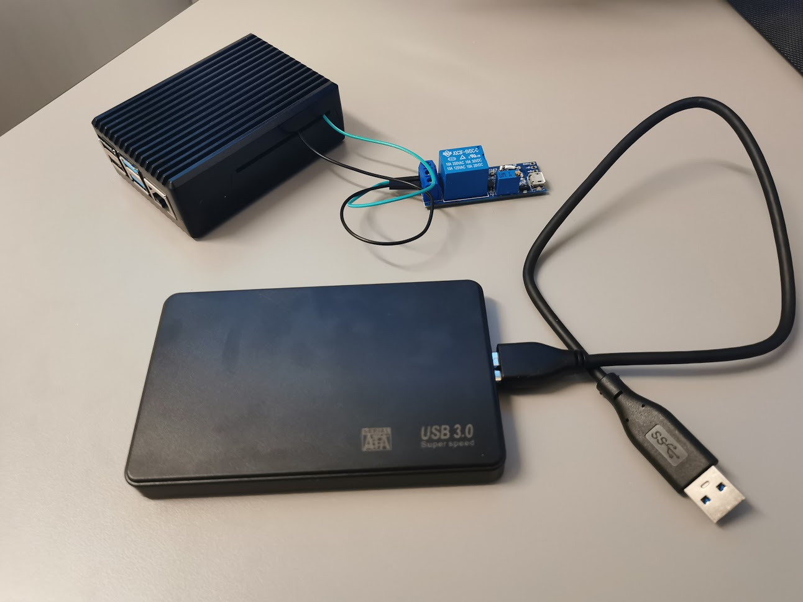

Innhold
Her er komponentene som boksen skal inneholde: Raspberry Pi, rele og en SSD.
Media Player Boks laget i fusion 360.
Jeg har en Raspberry pi 4 som jeg bruker som mediespiller. De fleste kjører operativsystemet til en raspberry pi fra et SD kort, men SD kort er ikke laget for å takle så mange rewrites. Et uventet strømtap kan fort gjøre at SD kortet blir korrupt og ubrukelig. Det er mere stabilt og kjappere å ha operativsystemet kjørende fra Minnepenn eller en SSD. Jeg hadde en ekstra SSD liggende som jeg via en usb har koblet til Raspberry Pi. I tilleg har jeg et rele koblet til GPIO pinnene på Raspberry Pi'en, og som videre er koblet til TV'en vi USB. Når TV'en blir skrud på sendes et signal til Raspberry Pi'en slik at den også blir skrudd på. Jeg har dermed behov for en boks hvor alle 3 komponentene er samlet i
Jeg har valgt å designe boksen i Fusion 360. Raspberry Pi'en har jeg nå i en svært god case med tanke på kjøling. Fordi CPU'en er limt fast i casen, så hele casen fungerer som CPU kjøling. Dermed var planen å plassere hele casen med Raspberry Pi'en i en boks med mye kjøling. Det viktigste med designet mitt var å få nok luftgjennomstrømning til Pi'en, dermed la jeg SSD'en nederst med en spacers oppå for Pi'en å stå på men også for å holde seg på plass. Først hadde jeg firkantige hull i boksen for å koble til strøm, HDMI, AUX, USB og internett kabel. Når jeg så på slutten skulle designe ventiler for kjøling på 2 av sidene kom jeg over "voronoi sketches generator" for å lage tilfeldige linjer og kurver i fusion 360. Da fikk jeg ideen om å også bruke det til "tilfeldige" hull i stede for de firkantige hullene som jeg først hadde laget. Medie Player Boksen gikk da fra å være en stygg boks til å bli et kunstverk.
Her er komponentene som boksen skal inneholde: Raspberry Pi, rele og en SSD.
Hær kan du se Media Player Boksen i fusion 360 med alle komponentene inni.